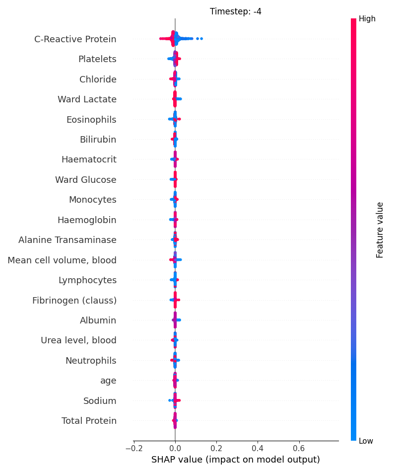
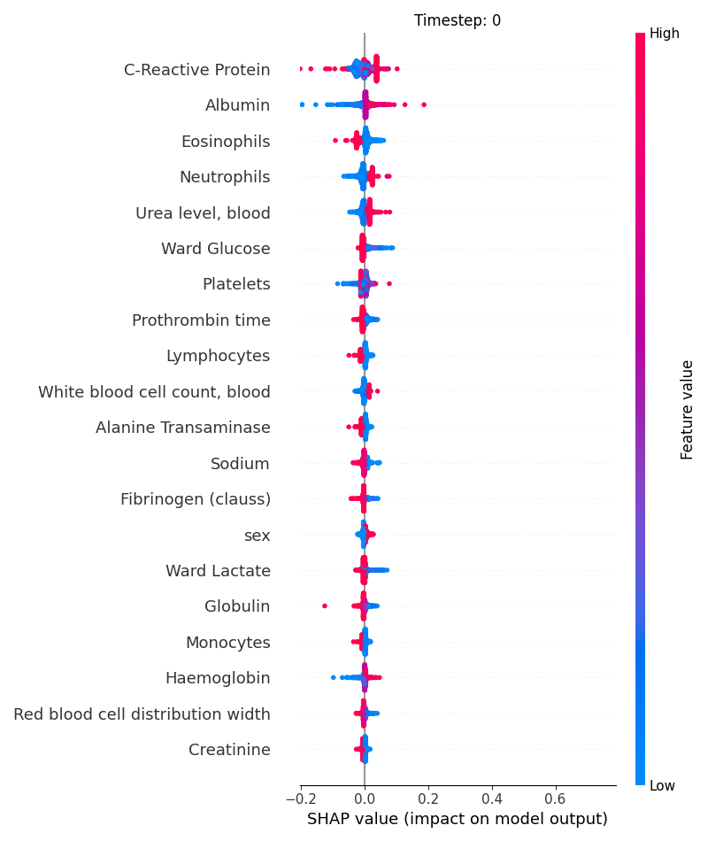
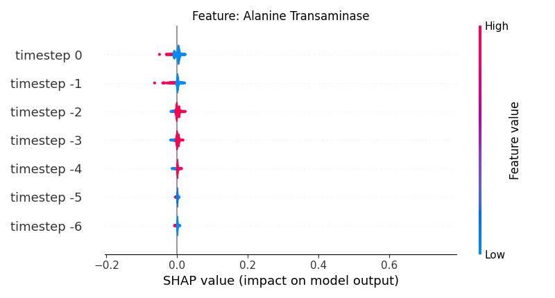
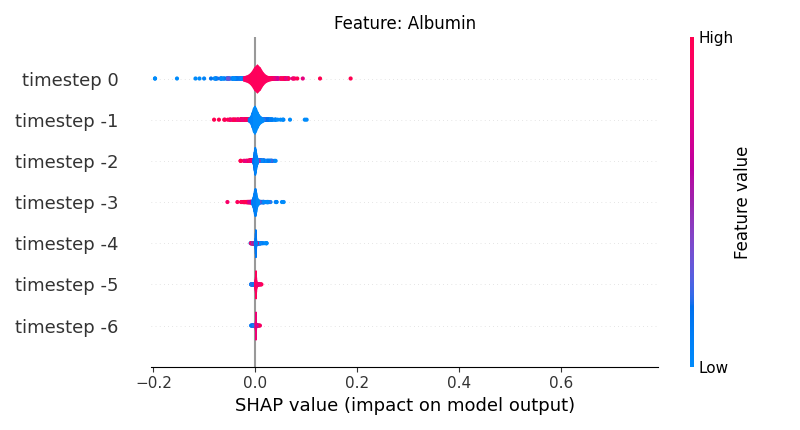
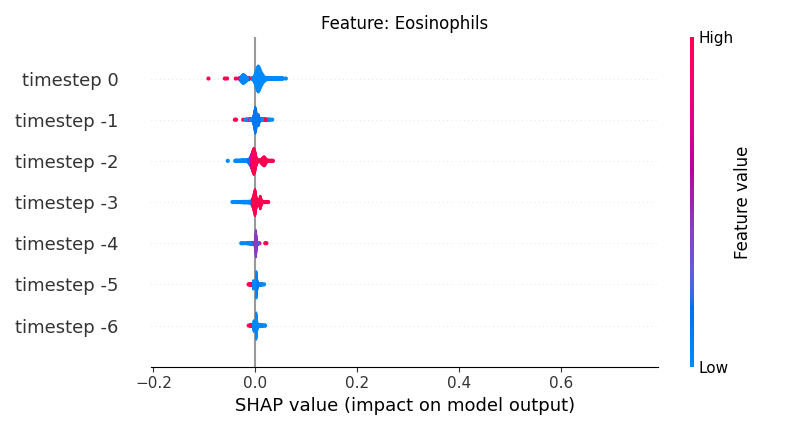

Note
Click here to download the full example code
Shap - Main 05 - Summary plot
6 # Libraries
7 import shap
8 import pandas as pd
9
10 import matplotlib.pyplot as plt
11
12
13 try:
14 __file__
15 TERMINAL = True
16 except:
17 TERMINAL = False
18
19
20 # ------------------------
21 # Methods
22 # ------------------------
23 def load_shap_file():
24 """Load shap file.
25
26 .. note: The timestep does not indicate time step but matrix
27 index index. Since the matrix index for time steps
28 started in negative t=-T and ended in t=0 the
29 transformation should be taken into account.
30
31 """
32 data = pd.read_csv('./data/shap.csv')
33 data = data.iloc[:, 1:]
34 data = data.rename(columns={'timestep': 'indice'})
35 data['timestep'] = data.indice - (data.indice.nunique() - 1)
36 return data
37
38
39 # -----------------------------------------------------
40 # Main
41 # -----------------------------------------------------
42 # Load data
43 # data = create_random_shap(10, 6, 4)
44 data = load_shap_file()
45 #data = data[data['sample'] < 100]
46
47 shap_values = pd.pivot_table(data,
48 values='shap_values',
49 index=['sample', 'timestep'],
50 columns=['features'])
51
52 feature_values = pd.pivot_table(data,
53 values='feature_values',
54 index=['sample', 'timestep'],
55 columns=['features'])
56
57 # Show
58 if TERMINAL:
59 print("\nShow:")
60 print(data)
61 print(shap_values)
62 print(feature_values)
Let’s see how data looks like
66 data.head(10)
Let’s see how shap_values looks like
70 shap_values.iloc[:10, :5]
Let’s see how feature_values looks like
74 feature_values.iloc[:10, :5]
Display using shap.summary_plot
The first option is to use the shap library to plot the results.
82 # Let's define/extract some useful variables.
83 N = 10 # max loops filter
84 TIMESTEPS = len(shap_values.index.unique(level='timestep')) # number of timesteps
85 SAMPLES = len(shap_values.index.unique(level='sample')) # number of samples
86
87 shap_min = data.shap_values.min()
88 shap_max = data.shap_values.max()
Now, let’s display the shap values for all features in each timestep.
95 # For each timestep (visualise all features)
96 steps = shap_values.index.get_level_values('timestep').unique()
97 for i, step in enumerate(steps):
98 # Get interesting indexes
99 indice = shap_values.index.get_level_values('timestep') == step
100
101 # Create auxiliary matrices
102 shap_aux = shap_values.iloc[indice]
103 feat_aux = feature_values.iloc[indice]
104
105 # Display
106 plt.figure()
107 plt.title("Timestep: %s" % step)
108 shap.summary_plot(shap_aux.to_numpy(), feat_aux, show=False)
109 plt.xlim(shap_min, shap_max)
- 
- 
Now, let’s display the shap values for all timesteps of each feature.
115 # For each feature (visualise all time-steps)
116 for i, f in enumerate(shap_values.columns[:N]):
117 # Show
118 # print('%2d. %s' % (i, f))
119
120 # Create auxiliary matrices (select feature and reshape)
121 shap_aux = shap_values.iloc[:, i] \
122 .to_numpy().reshape(-1, TIMESTEPS)
123 feat_aux = feature_values.iloc[:, i] \
124 .to_numpy().reshape(-1, TIMESTEPS)
125 feat_aux = pd.DataFrame(feat_aux,
126 columns=['timestep %s' % j for j in range(-TIMESTEPS+1, 1)]
127 )
128
129 # Show
130 plt.figure()
131 plt.title("Feature: %s" % f)
132 shap.summary_plot(shap_aux, feat_aux, sort=False, show=False, plot_type='violin')
133 plt.xlim(shap_min, shap_max)
134 plt.gca().invert_yaxis()
135
136 # Show
137 plt.show()
- 
- 

- 

Total running time of the script: ( 0 minutes 6.350 seconds)